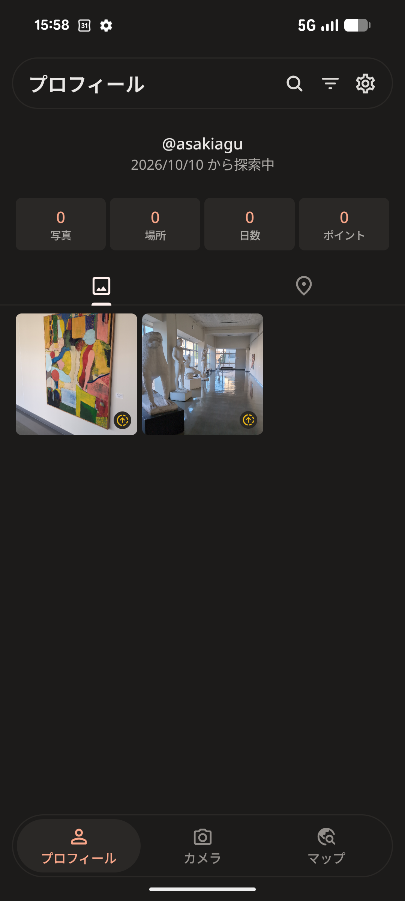
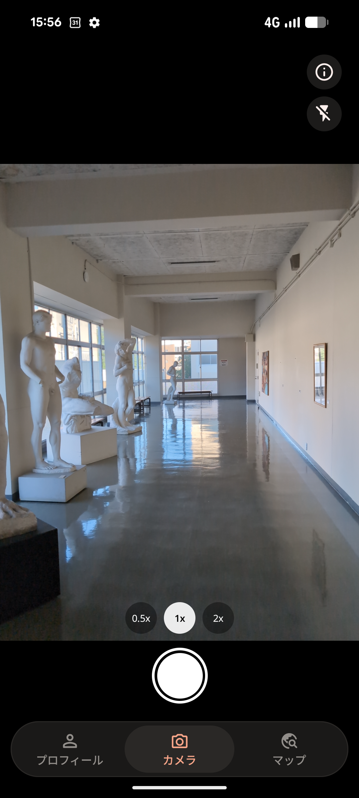
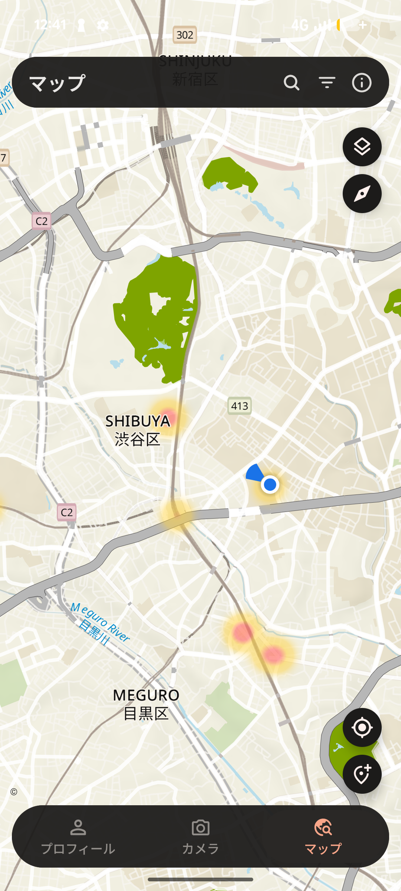
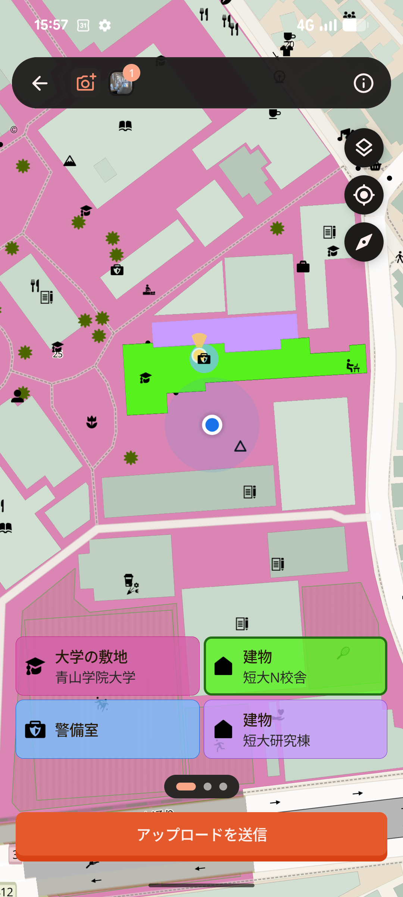
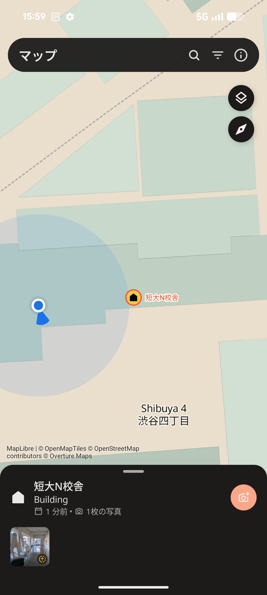
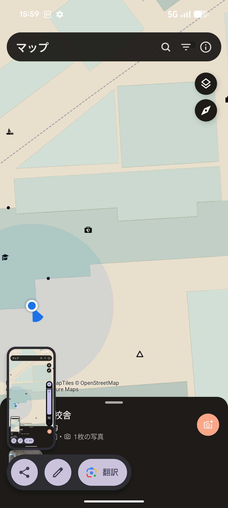
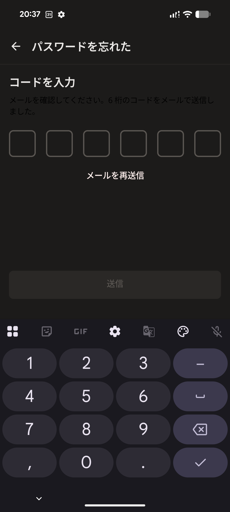
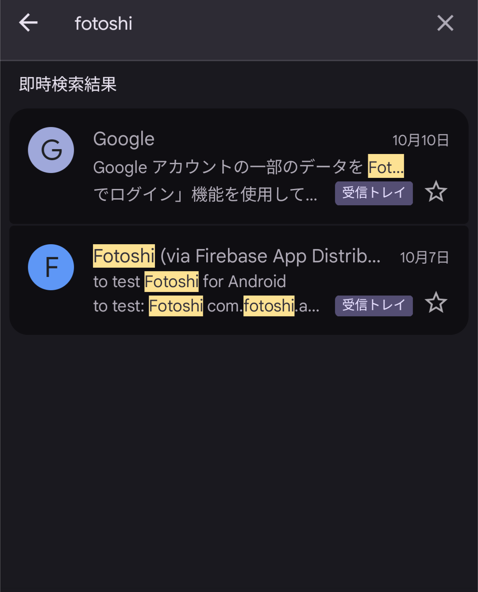
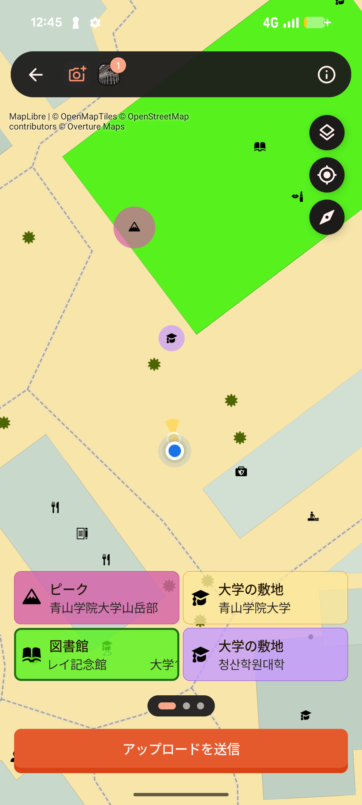
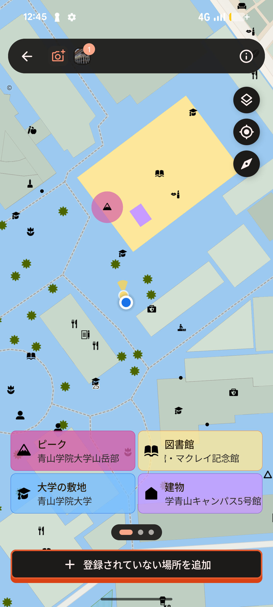

こんにちは！古橋研究室恒例の月1ハッカソン！
今回のテーマは、FOSS4G Hiroshimaなどで紹介されたツールを触ってみよう！というものです。自分はAndroidのスマホを持っていたので、Fotoshiを試してみることにしました。
Fotoshiの特徴
他のサービスと比べたときの違いをまとめました。
- ピンポイント撮影型
- 道を連続撮影するMapillaryなどと違い、お店や記念碑など「特定の場所・物」を撮って、地図上のオブジェクトに直接ひもづける。
- 「今の姿」と「変化」を重視
- 写真をお店や建物など個別の対象にひもづけ、その場所の最新の様子や変化を追いやすくすることを目指している。
- オープンライセンス
- 投稿写真は原則CC BY 4.0で公開され、写真ごとにライセンスが明示される。
- オープンな地図への貢献
- OpenStreetMapなどのオープンな地図データを、より新しく正確にするために活用できる。
UI
画面はシンプルで、プロフィール・カメラ・マップの3つです。

自分があげた写真や日数などを見られる

0.5倍・1倍・2倍の切り替えとフラッシュ機能

Fotoshiで撮影された場所をヒートマップで見られる
レイヤーを変えてみた
マップではレイヤーも変えられて、URLとレイヤー名を入れる場所があったので、国土地理院の航空写真を入れてみたのですが……変わってない？？
入れたURLはこちらです。
https://cyberjapandata.gsi.go.jp/xyz/seamlessphoto/{z}/{x}/{y}.jpg考えられる原因：URLの {z} などの波かっこが %7Bz%7D のように変換されていると、アプリが座標に置き換えられずタイルを読み込めない可能性があります。また、入力欄に最初から「https://」がある場合は、それ以降だけを入れる必要があるかもしれません。
あと、追加したレイヤーのアイコンを触ったら、登録したURLを確認できるようにしてほしいですね。
感想
撮影して地物を選ぶだけで投稿が完成するので、とても簡単でやりやすいと思いました。撮影場所を選ぶときに、選んだ建物の色が変わるなど、使いやすさが重視されていると感じました。

バグ？
使っていて気になったところです。
地図撮影した写真の地図表示が不安定
屋内で撮影したときは、最初は地図に表示されるのに、すぐに消えてしまいました（下の2枚はどちらも屋内です）。別の日に屋外で試したところ、撮影場所がしっかり表示されました（屋外のスクショは撮り忘れてしまいました…）。
屋内 → 表示されてもすぐ消える
屋外 → 表示された
屋内はGPSの精度が落ちやすいので、位置情報がうまく取れなかったのかもしれません。


ログインパスワード再設定のコードがGmailに届かない
パスワード再設定の画面でコードを送ってもらっても、Gmailにコードが届きませんでした。メールでのログインはうまくいきませんでしたが、画面下の「Googleアカウントでログイン」から入り直せました。（Googleアカウント・メールのどちらも同じメールアドレスを入れています）


表示地図が韓国語表記になる
地図のラベルが韓国語で表示されることがありました。ズームレベルを変えたら日本語に戻ったように見えます。

